Hobbies · In the bag
Yonex Astrox 88 D Pro
3rd generation, silver and black
- Balance
- Head-heavy
- Shaft
- Stiff
- Built for
- Rear-court attack in doubles
Yonex's back-court model. Steep smashes and a heavy head for when I'm the one hitting from behind.
Hobbies · In the bag
3rd generation, silver and black
Yonex's back-court model. Steep smashes and a heavy head for when I'm the one hitting from behind.
Hobbies · In the bag
3rd generation, black and green, 2025
The power-first frame. When I want the smash to do the talking, this is the one I pick up. Both get used with feather shuttles, and I go through tubes of them.
Hobbies · Badminton
Several times a week, always with feather shuttles. I'm the director of my school's badminton club, so I'm as likely to be sorting court bookings as playing on them. It's also the reason ShuttleSense exists.
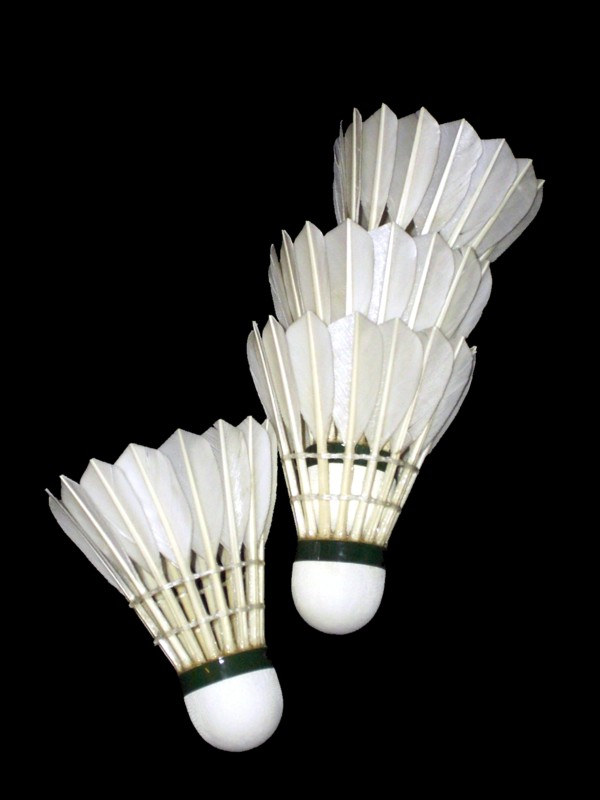
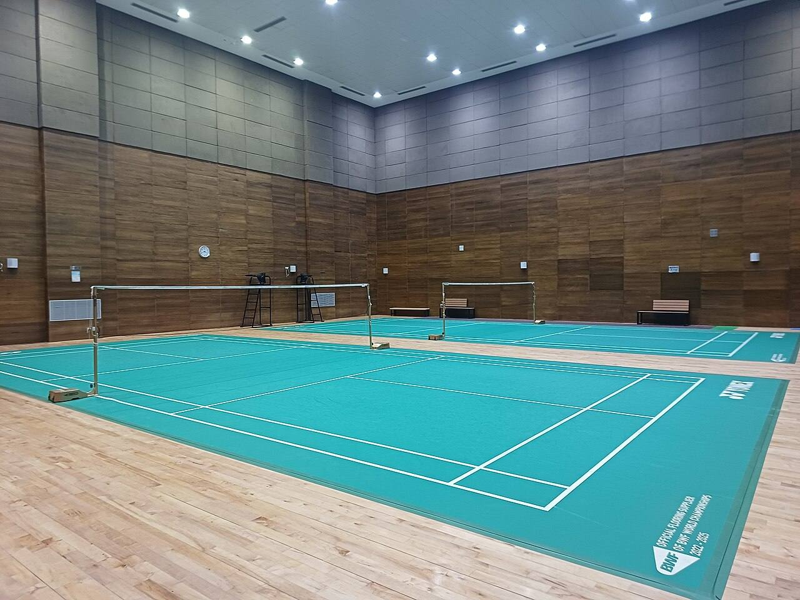
Hobbies · Favourite shot
From deep in my backhand corner, disguised like a clear, then cut cross-court so the shuttle stalls and dies just past the net. Scroll slowly and watch it land.
Hobbies · Club director
Court bookings, sessions, and making sure a first-year can walk in during their first week and find a game.
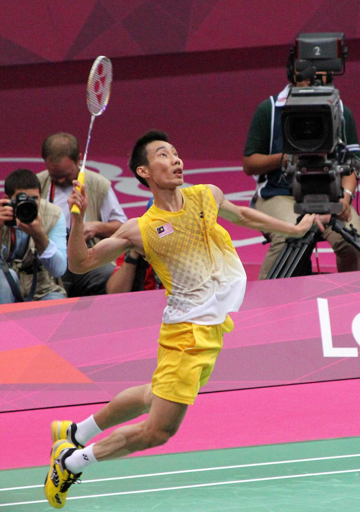
Hobbies · Soccer
FC Barcelona supporter and a Messi fan for as long as I've watched football. I like the ball at my feet, running at defenders and looking for the far post.
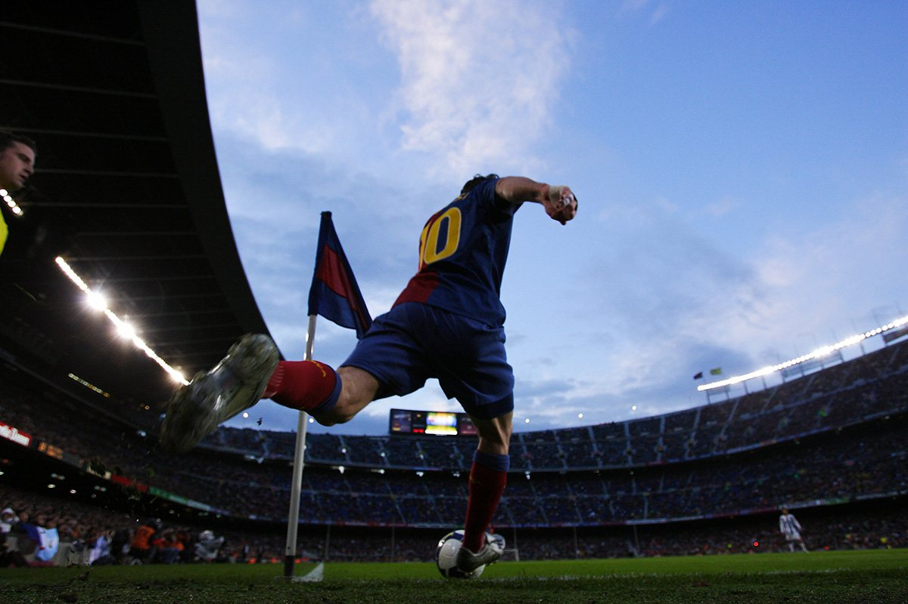
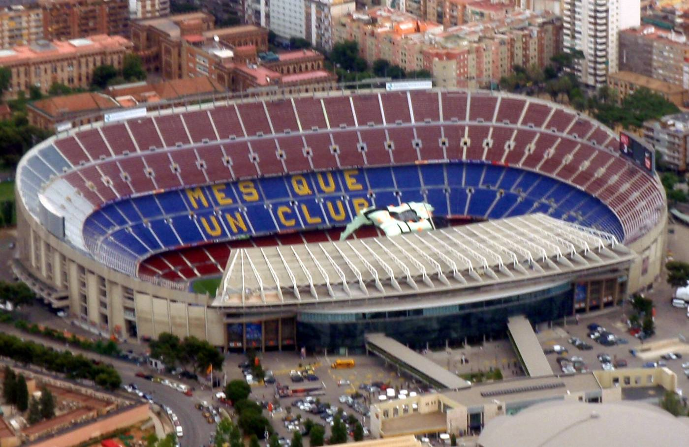
Hobbies · Signature finish
Start it outside the wall and let the spin bring it back into the top corner. My other favourite is a rabona into the top corner, which I save for when I'm feeling brave.
Hobbies · Campus
Executive team, chemical engineering ambassador. I help new and future students see what Waterloo actually offers, from someone who's been through it.
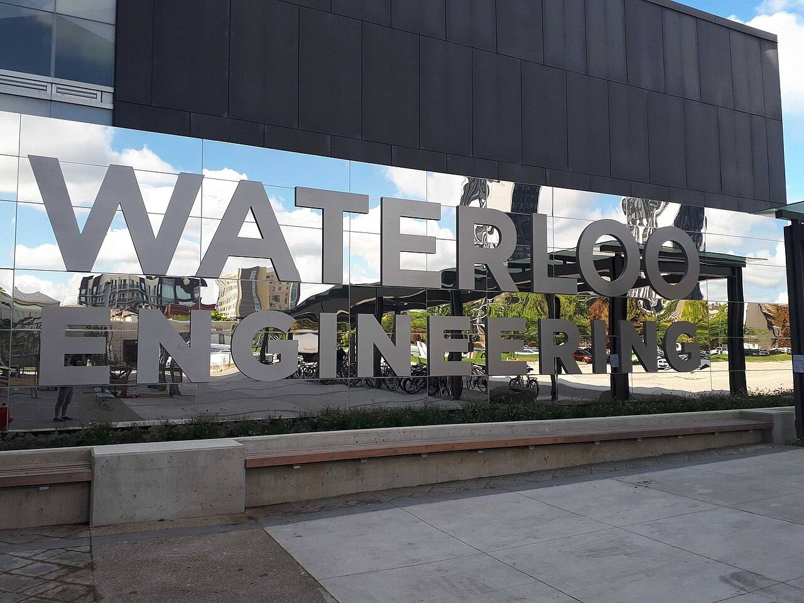
Projects
Every screen in this room is a real screenshot of the project. Each one is on GitHub.
Project · 2025 – now
An AI badminton coach that analyses match video, and tells you how confident it actually is.
Upload a match and get court detection, player tracking, pose-based technique and footwork analysis, rally segmentation and timestamped coaching notes. The rule I built it around: never invent a number. Every metric carries a confidence score, and it won't call a rally outcome it can't see.
Tested on 13.6 minutes of openly licensed real footage. Pose estimation reaches 76–88% coverage; court detection scores 0.89 on broadcast and falls back safely otherwise. Tracking still fragments (11–65 tracks for 2–4 players), and I publish that alongside the wins. Long footage exposed a 94 GB memory blow-up, which I rewrote to stream at about 1.3 GB.
FastAPI · React 19 · OpenCV · MediaPipe · Supabase · 72 endpoints · 248 tests
Capstone · 2026 – now
Can a data centre's waste heat make electricity without breaking its cooling limits?
An hour-by-hour model of the whole loop: data hall, shell-and-tube exchanger, thermoelectric array, DC-DC converter, battery and back to the IT bus. It lets our team compare 5 cooling architectures and 6 battery chemistries in minutes.
Gnielinski and Sieder–Tate on the tube side, Kern's method on the shell side, ε-NTU per shell, and a 1-D TEG model with Peltier, Fourier and Joule terms solved iteratively. Every design is checked against our proposal limits: ≤ 1 °C coolant change, ≤ 5% added pressure drop, < 2% pump power, ≥ 100 W per 25 kW rack, payback ≤ 10 years.
It guides a physical prototype: a Bi₂Te₃ TEG on a shell-and-tube exchanger charging a sodium-ion battery, checked with ANSYS CFD/FEA and cycling tests.
Project · 2026
A forecasting dashboard that grades its own predictions against what the market actually did.
I forked Kronos, an open-source foundation model that reads candlesticks like a language, and built a six-tab Streamlit dashboard on top for an eight-stock watchlist. Every 30-day forecast is saved with its date, then scored day by day on MAE, RMSE and direction hit-rate.
The screen shows a forecast-vs-actual example from the Kronos model repository. It's a learning project about evaluation, not investment advice.
Career
Every pin on this table is a real office, from Waterloo to downtown Toronto. Keep scrolling to visit each one, most recent first.
Map drawn from Natural Earth data: Lake Ontario, the 401, 403, 407 and QEW, and the Grand River through Waterloo Region.
May 2026 – now · 2600 Meadowvale Blvd, Mississauga
Canada's courier network. A co-op that became a part-time role alongside school.
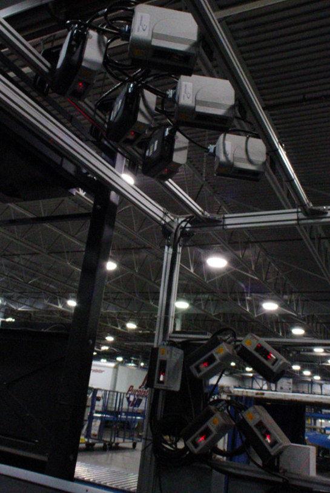
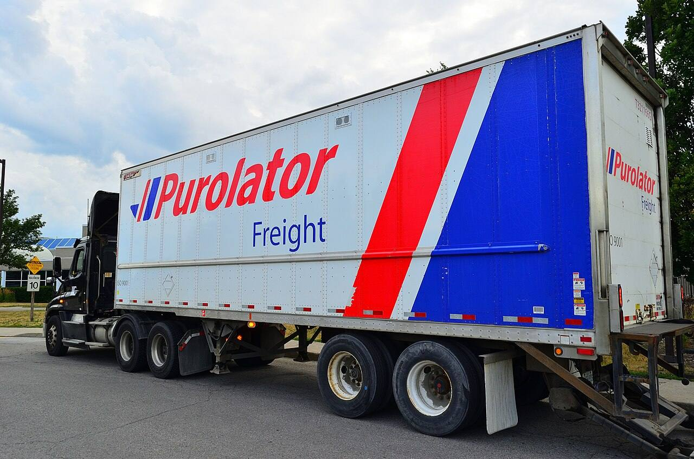
2025 – now · Toronto
A studio that builds custom software, automation and applied AI around how a business actually runs.
2025 – now · North York and London, ON
In-person AI classes where teens build real games, websites and apps. I design the curriculum.
Sep – Dec 2025 · 2000 Argentia Rd, Plaza 1, Mississauga
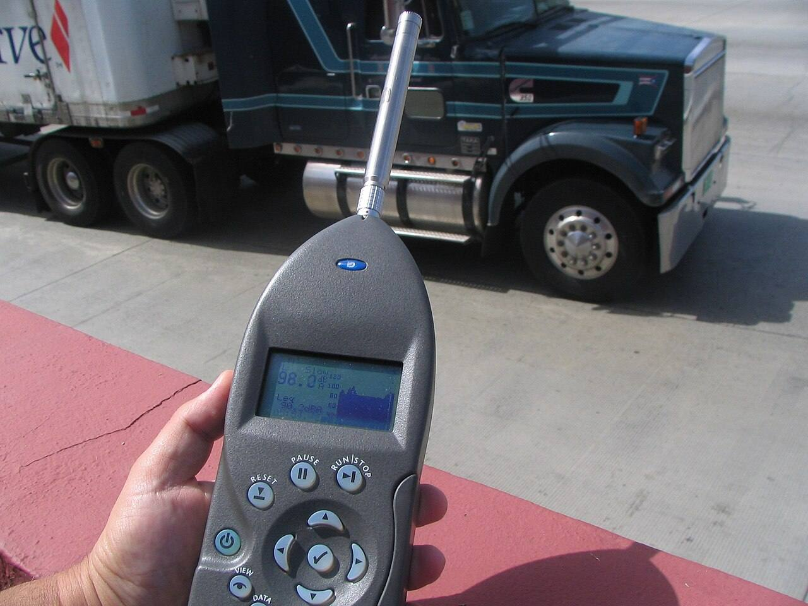
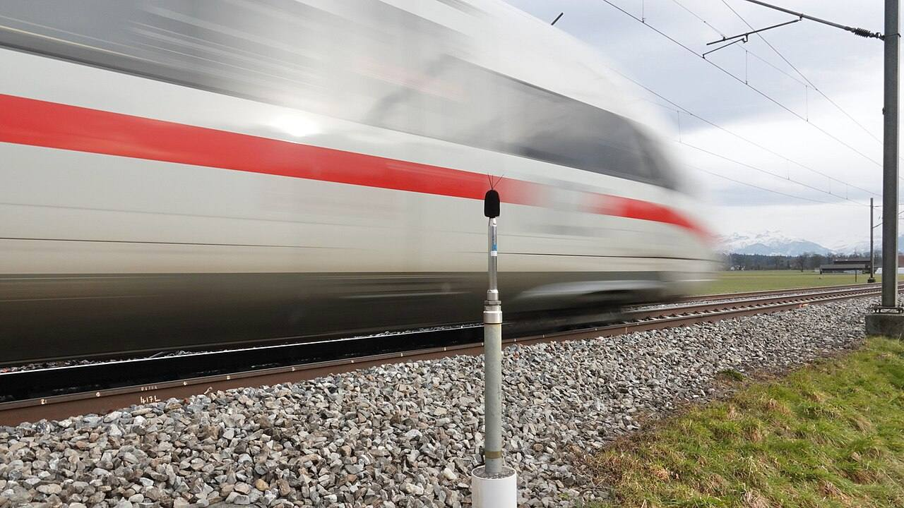
May – Aug 2025 · Engineering 6, University of Waterloo
Uranium process research.
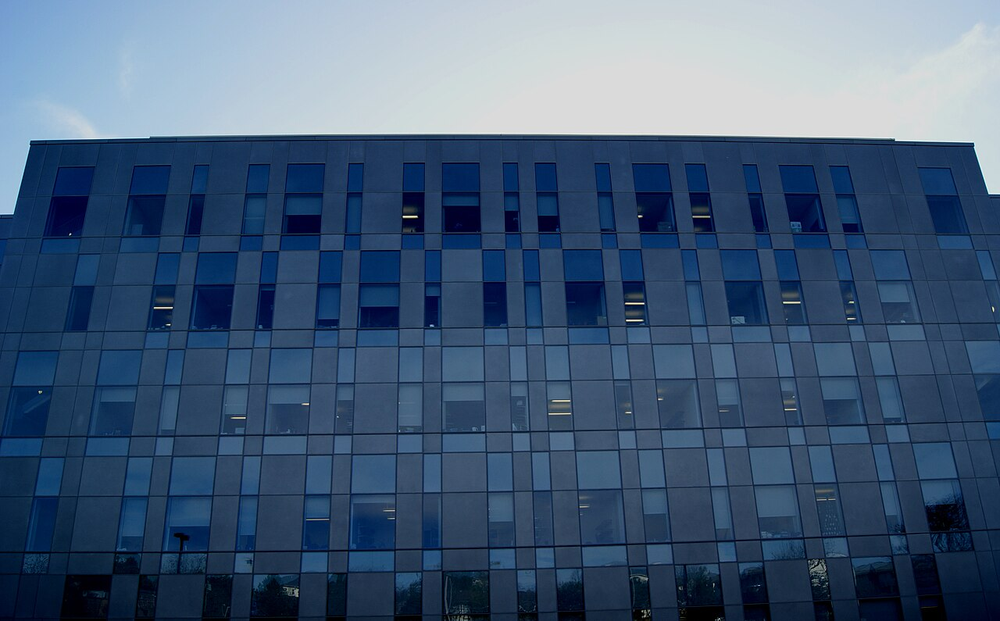
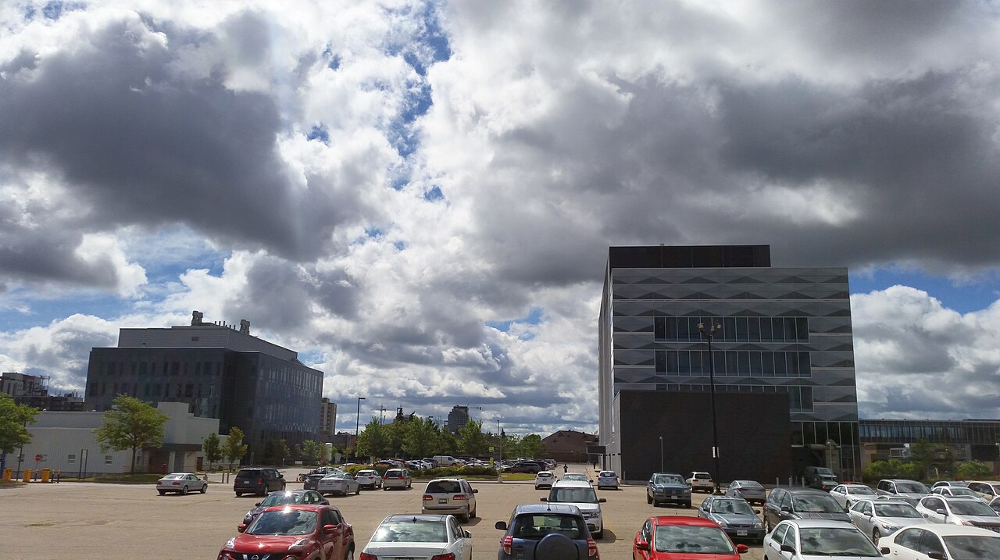
Sep – Dec 2024 · 18 York St, Toronto
Jan – Apr 2024 · Sir William Hearst Ave, Toronto
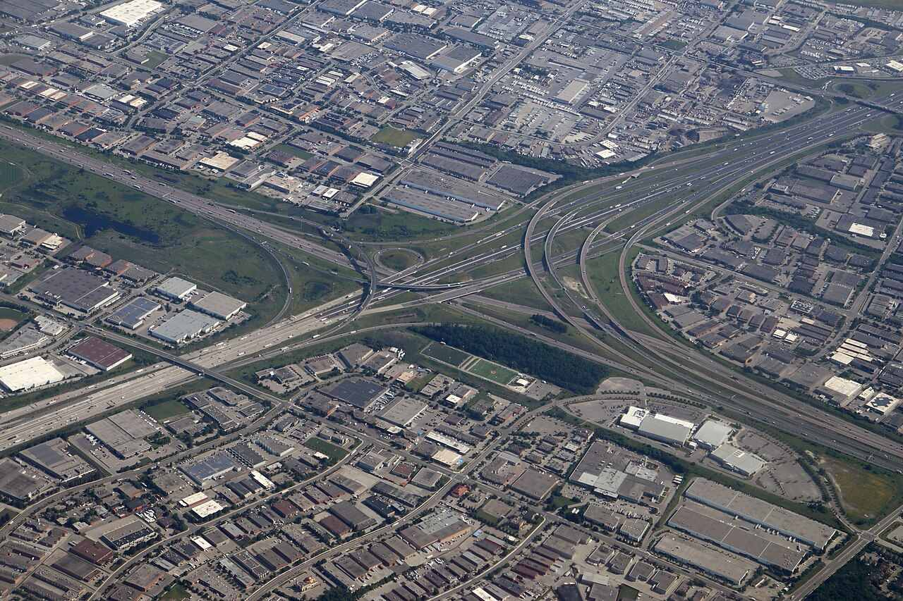
May – Aug 2023 · 10 Airport Rd, Caledon
Green Infrastructure Partners: 40+ asphalt plants and 250+ pits and quarries across Canada. I worked mainly in the recycled-asphalt lab.
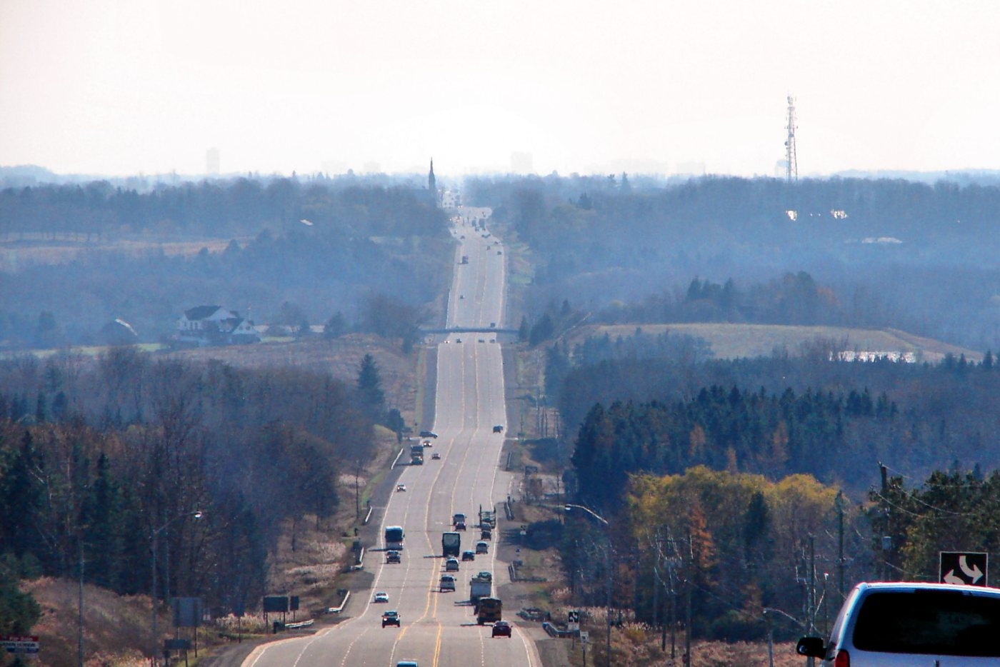
Learning · Fall 2026, 4A
Learning · Side projects
Process engineering, computer vision, energy systems or badminton.
Photos from Wikimedia Commons under their stated licences: shuttlecocks (Arne Nordmann, CC BY-SA 3.0), badminton court (Ruturajpol, CC BY-SA 4.0), Lee Chong Wei (Antony Stanley, CC BY-SA 2.0), Messi (Tsutomu Takasu, CC BY 2.0), Camp Nou (Oh-Barcelona.com, CC BY 2.0), Waterloo Engineering sign (Maplefirst, CC BY-SA 4.0), data centre (BalticServers.com, CC BY-SA 3.0), Purolator facility (jmv, CC BY-SA 2.0), Purolator truck (Raysonho, CC0), traffic noise measurement (Chuck Kardous, public domain), noise measurement station (Urs Schönholzer, CC BY 4.0), Engineering 6 (Victor Vucicevich, CC BY-SA 3.0), E5 and E6 (Kiyan, CC BY-SA 2.0), highway interchange (Coolcaesar, CC BY 4.0), Caledon (P199, CC BY-SA 3.0).
Map: Natural Earth (public domain). Textures and sunset HDR: three.js example assets. Kronos chart: shiyu-coder/Kronos (MIT).